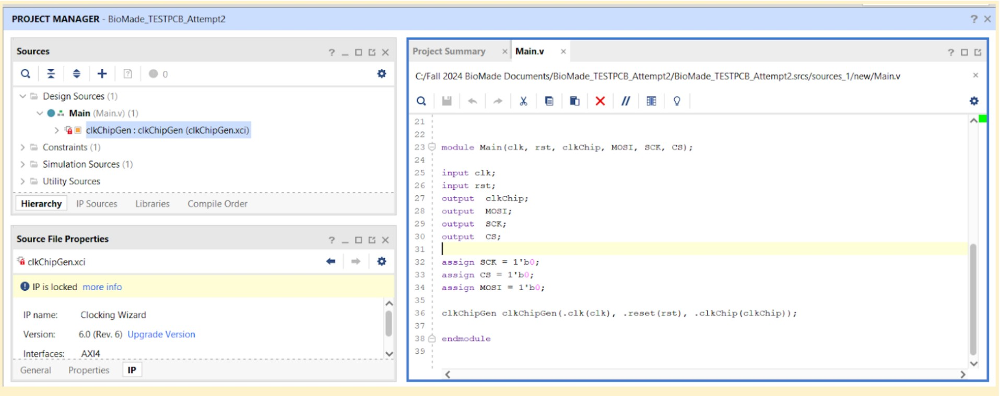

FPGA Programming Protocol#
There is a file in C:\Users\WISE Circuits 2\Desktop\Alperen\BioMADE_Test_FPGA.zip These are the original files to generate a clock for the chip
This section goes over how to do it again from scratch
FPGA Clock Output Setup Protocol for Chip Testing PCB#
Objective:Set up a clock output on the FPGA for testing a Chip Testing PCB using the Clocking Wizard.
Materials#
- FPGA development board
- Chip Testing PCB
- Vivado Design Suite (or relevant FPGA development software)
- Computer with necessary drivers and development software installed
Steps#
- Open Vivado and Create a Project
- Launch the Vivado Design Suite.
- Open or create a new FPGA project.
- Open IP Catalog
- In the project dashboard, navigate to the IP Catalog.
- Search for Clocking Wizard in the catalog search bar.
- Configure the Clocking Wizard
- Select Clocking Wizard from the search results.
- Name your clock component appropriately (e.g., clk_gen).
- Set Output Clock Parameters
- In the Clocking Wizard settings, locate the Output Clock section.
- Change the output frequency to the desired value for your Chip Testing PCB.
- Configure Clocks
- Under the clock outputs, ensure Clock 1 is selected as the active output clock.
- Set the duty cycle to 50% for a standard symmetric clock output.
- Disable any additional output signals like the locked signal (set to "No").
- Generate Clocking Wizard IP
- Click Next through the remaining setup windows.
- Review the configuration and click Generate to create the clocking component.
- Verify Clock Output
- Ensure that the clocking wizard has been generated successfully, and the clock output is ready for use with the Chip Testing PCB.
Notes#
- If further adjustments to the clock signal are needed, return to the Clocking Wizard and modify the parameters.
- Follow your FPGA toolchain’s standard flow for synthesizing and programming the design to the FPGA.
Output#
- Clock signal is generated according to your specifications and routed for use with the Chip Testing PCB.
Clock Settings to Use#
- Clk_in1 = 125 MHz (the internal CLK is hard set to 125 MHz, use this value)
- If this is not set to the value of the internal oscillator, the system will create a voltage divider. For example, if it is set to 100 MHz, and the output is set to 10 MHz, it will output 12 MHz.
- Clk_out1 = 10 MHz (the frequency at which chip characterization was performed)